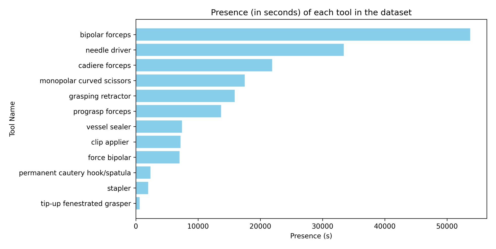
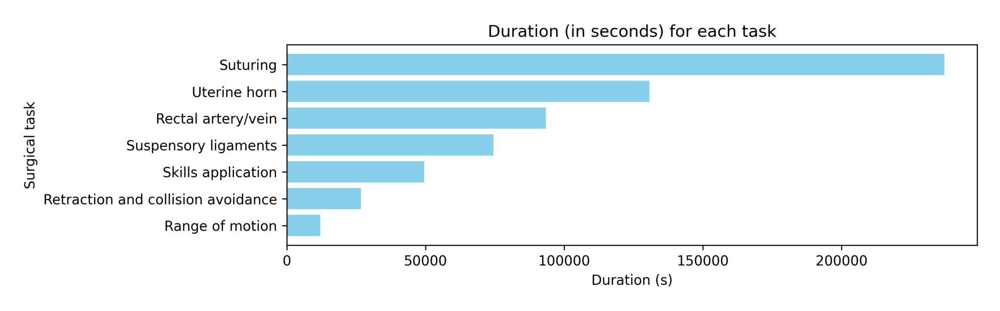
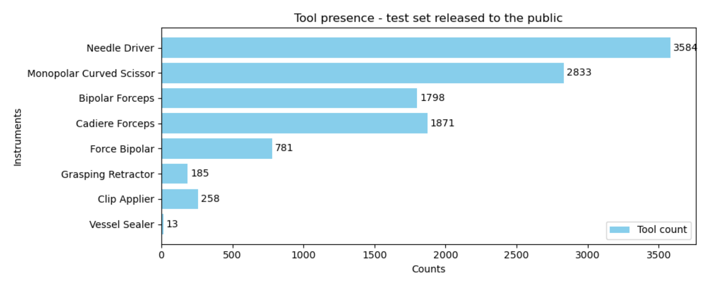
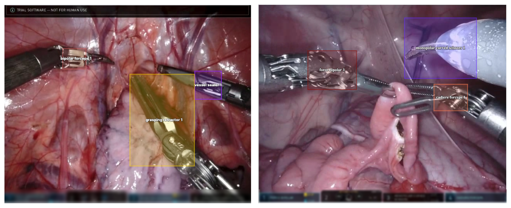

图文解读
1背景与动机
机器人手术天然产生大量视频和系统数据，但机器学习社区接触这类数据的门槛很高。 机器人辅助手术每年已超过一百万例，每台手术都留下高分辨率内镜视频和器械记录。
已有公开手术数据集多以几十到几百个病例计，比如 Cholec80、HeiChole、JIGSAWS。Intuitive Surgical 每年在 MICCAI EndoVis 上办 SurgToolLoc / SurgVU 挑战赛，本文就是这些挑战赛所用数据的说明文档。
它只描述数据，不做实验。 任务定义和方法比较在配套的挑战赛论文里。
2核心观点速览
数据来自猪模型上的达芬奇培训：280 个片段、155 次培训、超过 840 小时，60 帧每秒、1280×720。
标签分两层。 训练集只有区间级标签：系统日志给出的器械装卸区间（12 种器械）和专家标注的 8 类训练步骤，外加每步骤的文字描述和 10 个片段的问答样例。唯一的空间标注是工具检测验证集：每秒 1 帧、众包画框、8 种器械。
边界同样明显。 没有划分、指标和基线；全部是猪模型、单中心、单平台；840 小时与约 1800 万帧相差约 10 倍。
3器械存在标签是怎么来的
达芬奇系统会记录每个机械臂何时装上、何时卸下哪件器械。作者把这些事件配对成区间，写进 tools.csv，每行是片段号与时间组成的起止点、机械臂编号和器械名。
这种标签几乎零成本，但“装上”不等于“看得见”。 器械被组织遮挡或移出视野时，标签仍是存在。所以负标签干净，正标签有假阳性。论文承认有噪声，但没有给比例。

按图估读，双极镊约 5.4 万秒，可上翻开窗抓钳不足 1 千秒，相差约 90 倍。宏平均指标会被尾部类拖低。
4步骤、描述与问答
临床专家标了 8 类训练步骤，存在 tasks.csv，格式与 tools.csv 相同。缝合时长最长，按图 4 估读约 23.7 万秒，活动范围约 1.2 万秒。图 4 只画出 7 类，“其他”类的时长论文未说明。

v2 新增的 matched description 列给每个步骤附上标准流程描述。从列名和示例看，同一步骤的片段很可能共享同一段文字，论文未说明。如果是这样，文字监督只有 8 段模板。
问答样例集有 10 个片段，每个 30 秒块一组问答，每题 5 个参考答案。打分方法论文未说明。
5唯一的人工框：验证集
验证集来自挑战赛的工具检测问题：降采样到每秒 1 帧，众包标注员画框。12 种器械里只有 8 种出现。

框不覆盖整把器械，而是落在夹钳关节（clevis）上。 关节不明确时连尖端一起框，器械太大时只框尖端。规则中提到的吸引冲洗器不在 12 种器械列表里，论文未说明。

界面会显示器械名，作者在样例里模糊了它。训练视频是否同样处理，论文未说明；若未处理，模型可能靠读字分类。
6规模数字对不上
| 口径 | 论文数字 | 换算 |
|---|---|---|
| 视频总时长 | 超过 840 小时 | 约 1.8 亿帧 |
| 帧数 | 约 1800 万帧 | 约 83 小时 |
| 图 4 步骤时长合计（估读） | 约 62 万秒 | 约 173 小时 |
| 图 3 器械时长合计（估读） | 约 18 万秒 | 约 51 小时 |
这四个口径最多相差十几倍。 同一时刻最多 3 件器械，器械时长合计本应接近或超过视频总时长，实际只有约 51 小时。原因论文未说明，引用规模前应下载后自己统计。
7它真正能测什么
最适合的是弱监督器械检测：训练只有存在区间，评测有人工框，这正是挑战赛连续几年的设定。其次是噪声标签下的步骤识别，以及同平台视频的自监督预训练。
论文在潜在方向里列了分割、跟踪、技能评估和视频语言模型，但前三者没有对应标注，视频语言只有模板化描述。这些只是可能的用途，不是数据集已支撑的任务。
| 数据集 | 场景 | 平台 | 精细标注 |
|---|---|---|---|
| JIGSAWS | 台式模型基础任务 | 达芬奇 | 手势、技能分数、运动学 |
| Cholec80 | 真实患者胆囊切除 | 腹腔镜 | 阶段、器械存在 |
| SurgVU | 猪模型多步骤培训 | 达芬奇 | 仅验证集有框 |
SurgVU 用场景真实性和标注精度换来了规模。
8复现要注意什么
- 自己统计时长、帧数和每类时长，不直接引用论文数字。
- 按培训划分，避免同一术者与同一只猪的片段跨训练和测试；验证集来源论文未说明。
- 检查训练视频的界面区域，必要时遮挡。
- 检测框按夹钳关节定义对齐。
- 先在验证集上估计“装上但不可见”的比例，再定正标签权重。